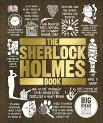

📖《福尔摩斯百科》是DK出版社出品的文学参考书，全面解读柯南·道尔笔下的侦探世界。书中详细分析了每一个案件，梳理了人物关系图谱，还原了维多利亚时代的伦敦背景。
从血字的研究到最后一案，从贝克街221B到莱辛巴赫瀑布，这本书让读者深入理解福尔摩斯推理艺术的精髓。
看过原著，这本书给了相当棒的总结。
作为一个福尔摩斯迷，这本书简直是宝藏。它不仅系统地梳理了60个正典案件，还深入分析了福尔摩斯的推理方法、华生的叙事视角、莫里亚蒂教授的反派魅力。每一个案件都有详细的情节梳理、线索解读、推理过程复盘。
最有意思的是书中对维多利亚时代背景的还原。当时的伦敦是一个怎样的城市？雾都的迷雾从何而来？福尔摩斯的科学方法在当时有多超前？这些背景知识让原著有了更深的层次。书中的插图也精美绝伦，从贝克街的平面图到各种案件的现场还原，都让人身临其境。如果你是福尔摩斯迷，这本书值得收藏。